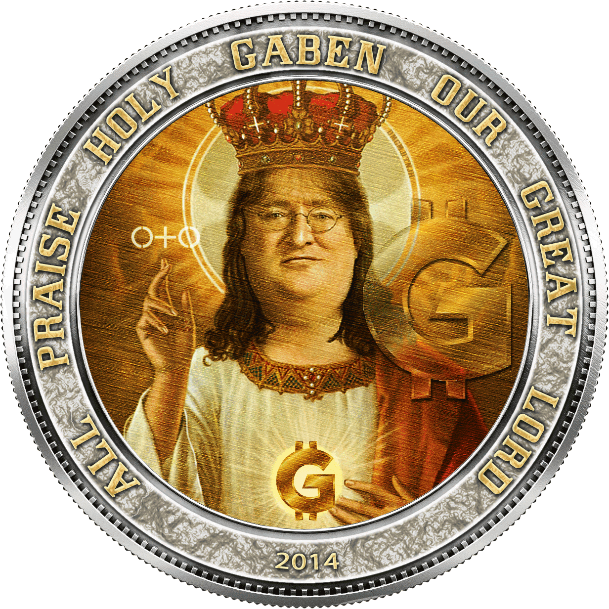
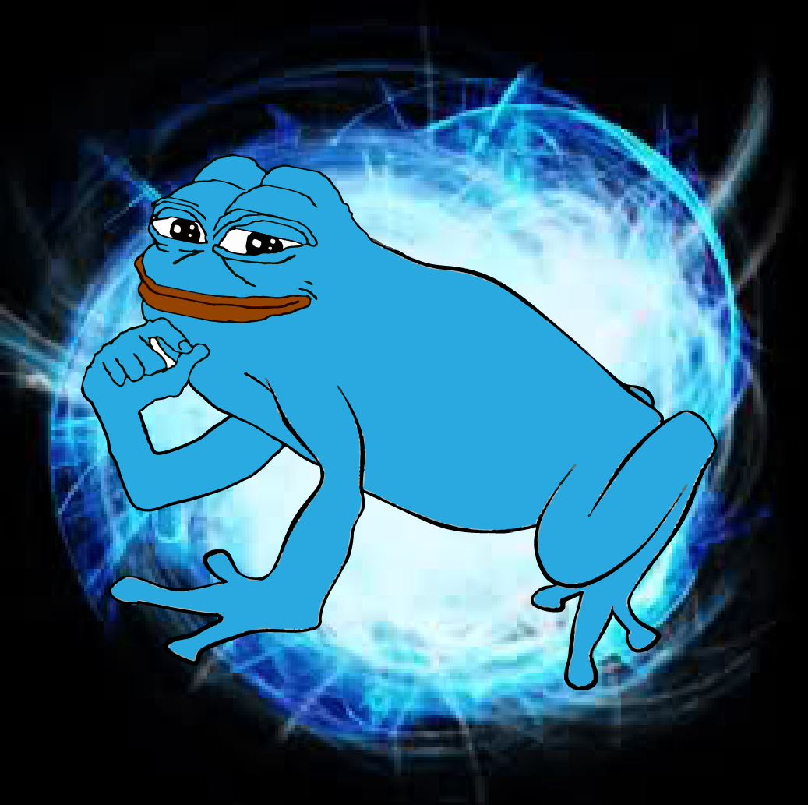

Riki
Riki
 Bloodseeker
Bloodseeker
 Juggernaut
Juggernaut
 Clinkz
Clinkz
") Sniper
Sniper
| Герой | Матчи | Доля побед | УСП | |
|---|---|---|---|---|
|
Riki
|
76 | 75.00% | 4.63 | |
|
Bloodseeker
|
62 | 51.61% | 2.80 | |
|
Juggernaut
|
48 | 58.33% | 3.18 | |
|
Clinkz
|
63 | 55.56% | 2.63 | |
|
Sniper
|
40 | 65.00% | 4.13 | |

Dota 2 — компьютерная
многопользовательская командная игра в жанре
MOBA(multiplayer online battle arena), разработанная Valve Corporation.
Является
независимым продолжением карты-модификации DotA для игры Warcraft III.
Dota 2 работает по модели free-to-play с элементами микроплатежей.
Гейб Логан Ньюэлл— один из основателей и генеральный директор компании Valve, занимающейся разработкой компьютерных
игр и их цифровой дистрибуцией.
Является одним из самых известных и богатых людей и находится на 134 месте рейтинга журнала Forbes.

Абдул Измаил, более известный как
IceFrog — геймдизайнер, известный за самую долгую поддержку и разработку вплоть
до текущего момента модификации Defense of the Ancients для Warcraft III.
